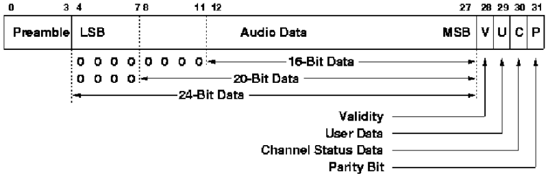
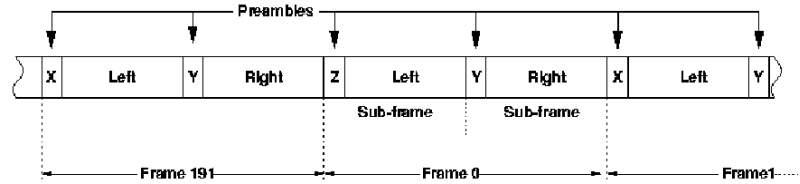
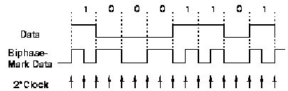
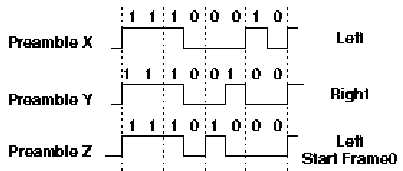
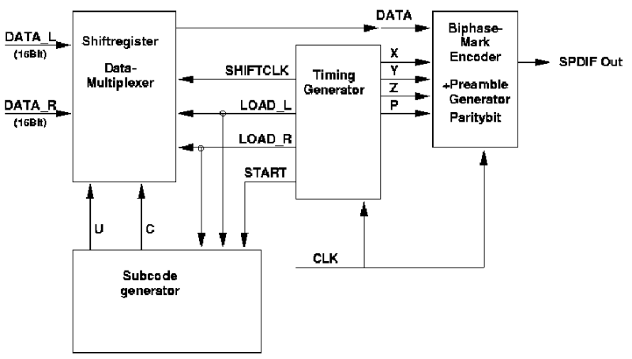

Digital Audio - S/PDIF
3.79 Ablaufsteuerung
Entwickeln Sie ein VHDL-Programm, dass die Ablaufsteuerung implementiert.
Zusammenfassung:
Es soll eine Schaltung entwickelt werden, die im Parallel-Format vorliegende Audiodaten in das S/PDIF-Format umwandelt.
Beschreibung der Grundlagen:
Um Audiodaten verlustfrei (d.h. ohne digital-analog-digital-Umwandlung) zu überspielen, besitzen DAT- und MD-Recorder und viele CD-Player einen digitalen Ein- und Ausgang, das Sony/Philips Digital InterFace. Dieses kann sowohl optisch (Glasfaserkabel) als auch elektrisch (Koaxialkabel) ausgeführt sein. Nur wenig verändert, wird S/PDIF auch in der professionellen Studiotechnik verwendet (da heisst es AES/EBU).
Im Prinzip ist S/PDIF eine serielle Schnittstelle, über die die digitalisierten Audiodaten (Samples) mit einigen Zusatzinformationen sehr schnell (ca. 3MBit/s) übertragen werden. Die Zusatzinformationen sind z.B. die Abtastfrequenz, Signalquelle und auch das berüchtigte Copybit, das mehr als eine digitale Kopie verhindern soll.
Der prinzipielle Aufbau der Datenübertragung (Protokoll) ist folgender:

Aufbau eines Subframes
Für jeden der beiden Kanäle (links und rechts) werden die Samples (16/20/24bit) in einen sog. Subframe mit 32Bit eingebettet. Dieser Subframe hat einen Vorspann (Preambel) der zur Kanalunterscheidung (X bzw. Y- Preambel) und zur Blockerkennung (s.u.) dient.
Zusätzlich gibt es noch 4 weitere Bits:
V: Validity, wenn 1, sind die Daten gültig. Kann z.B. beim Abspielen eines DAT-Bandes wegen Bandfehlern auf 0 gesetzt werden.
U: User data, damit wird über mehrere Subframes hinweg eine benutzerdefinierte serielle Information übertragen.
C: Channel status, hier werden ebenfalls seriell standardisierte Statusinformationen übertragen (zB. Copybit etc).
P: Parity, übernimmt keine Fehlererkennung, sondern hat mit dem verwendeten Kodierungsverfahren zu tun (s.u.)
Wenn also Stereo-Daten mit 44.1kHz übertragen werden sollen, ergibt das einen Datenstrom von 44100 * 2 * 32Bit/s = 2822400Bit/s, das sind knapp 2.7MBit/s!
Je zwei Subframes für links und rechts ergeben einen Frame, 192 Frames ergeben einen Block, in dem die U- und C-Bits jeweils 2*192 Bit an Zusatzinformation übertragen (normalerweise aber für links und rechts dieselbe). Um den Anfang des Blocks zu markieren, ist die erste Preambel des Blocks für den linken Kanal nicht die X-Preambel, sondern die Z-Preambel.

Abfolge der Frames
Die Subframes werden nun seriell ausgegeben, allerdings nicht im Rohformat, sondern speziell kodiert. Dies muss deshalb geschehen, weil der Empfänger aus dem Datenstrom die Samplefrequenz (z.B. 44.1kHz) wiedergewinnen muss und auch die übertragung möglichst gleichstromfrei erfolgen sollte. Ohne Kodierung wäre das bei andauernden 0-Werten nicht der Fall. Diese Kodierung ist die sog. Biphase-Mark-Kodierung (verwandt mit der Manchesterkodierung bei Ethernet), die dafür sorgt, dass in jedem Bit mindestens ein Pegelwechsel auftritt. Dazu wechselt das Ausgangsignal für jedes Bit den Wert, zusätzlich wechselt es noch in der 'Mitte' des Bits, falls eine '1' übertragen werden soll.

Biphase-Mark Kodierung
Zur Kodierung wird daher der doppelte Takt der eigentlichen Bitrate benötigt, also bei 44.1kHz ca. 5.6MHz. Durch das Wechselprinzip ist die Polarität des Signals im Prinzip unwichtig, allerdings sollte das Parity-Bit immer einen solchen Wert haben, sodass der erste Wert eines Subframes '1' ist.
Um nun 'leicht' den den Anfang eines Subframes zu erkennen, haben die X/Y/Z-Preambeln ein Bitmuster, das nicht durch Biphase-Mark erzeugt werden kann und somit 'auffällt'.

Preambeln
Aufgabenbeschreibung:
Eine Möglichkeit, aus zwei 16Bit-Werten ein solches SPDIF-Signal zu erzeugen, ist in der folgenden Abbildung dargestellt, in der alle Blöcke in etwa gleich aufwendige Funktionen beinhalten:

Blockschaltbild eines SPDIF-Senders
Zentrales Steuerungselement ist die Ablaufsteuerung (Timing Generator), gesteuert von einem Takt (bei 44kHz Samplerate 5.6MHz). Sie bestimmt den zeitlichen Ablauf von Frames und Subframes, veranlasst das Einfügen der richtigen Preambeln und der Audio- und Subcodedaten.
Der Kodierungseinheit bekommt den bereits serialisierten Audio/Subcodedatenstrom, und kodiert diesen im Biphase-Mark-Verfahren. Durch vier weitere Eingänge wird bestimmt, welche Preambel eingefügt werden soll oder ob das Paritybit erzeugt werden soll.
Die serialisierten Daten kommen dabei aus einer Schieberegistereinheit, die zum richtigen Zeitpunkt einen der beiden Eingabewerte mit 16Bit und die User/Channelbits abspeichert und von einem Schiebetakt gesteuert, ausgibt.
Die Subcodeerzeugung soll hier nicht weiter betrachtet werden.
Jantho
Last modified: Mon Nov 04 14:08:00 Westeuropäische Normalzeit 2002